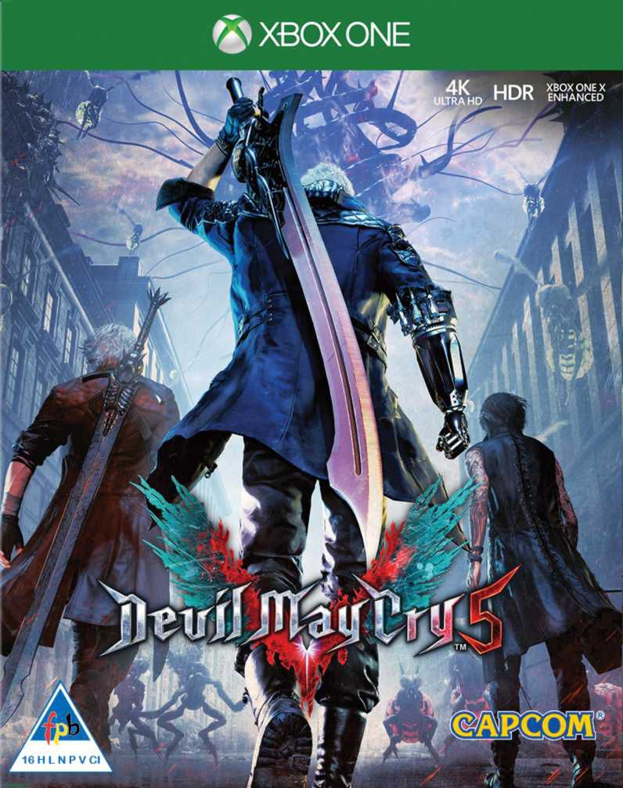

The devil you know returns in Devil May Cry V!
10 years since the last iteration, Devil May Cry® IV, Director Hideaki Itsuno and the core team have reunited to conclude the long awaited Sons of Sparda saga.
Several years have passed in Devil May Cry V and the threat of demonic power, long since forgotten, has returned to menace the world once again. The demonic invasion begins with the seeds of a “demon tree” taking root in Red Grave City.
This hellish incursion attracts the attention of the young demon hunter, Nero, an ally of Dante who now finds himself without his demonic arm, the source of much of his power. As Nero heads to Red Grave City in his motorhome named “Devil May Cry” with his partner Nico, he ruminates on how everything started. The loss of his demonic arm, the demonic invasion, and Dante’s unknown whereabouts. Things must be settled once and for all.
Capcom’s proprietary in-house RE Engine ensures that with Devil May Cry V, the series continues to achieve new heights in fidelity, featuring ground-breaking graphics that utilise photorealistic character designs and stunning lighting and environmental effects. It features three playable characters, each of which offer a radically different combat play style as they take on the city overrun with demons. Adrenaline-fuelled boss fights play out against destructible environments in the striking streets of Red Grave City.
